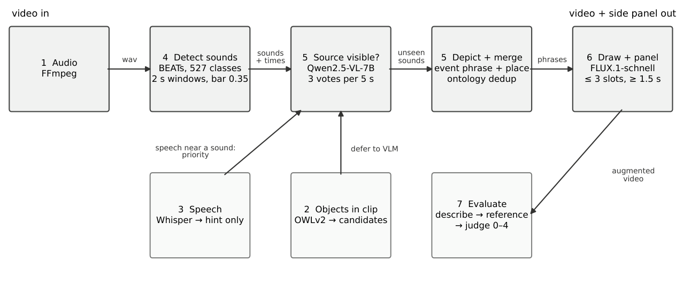
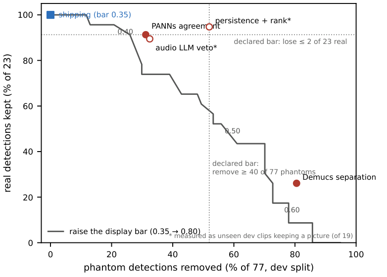
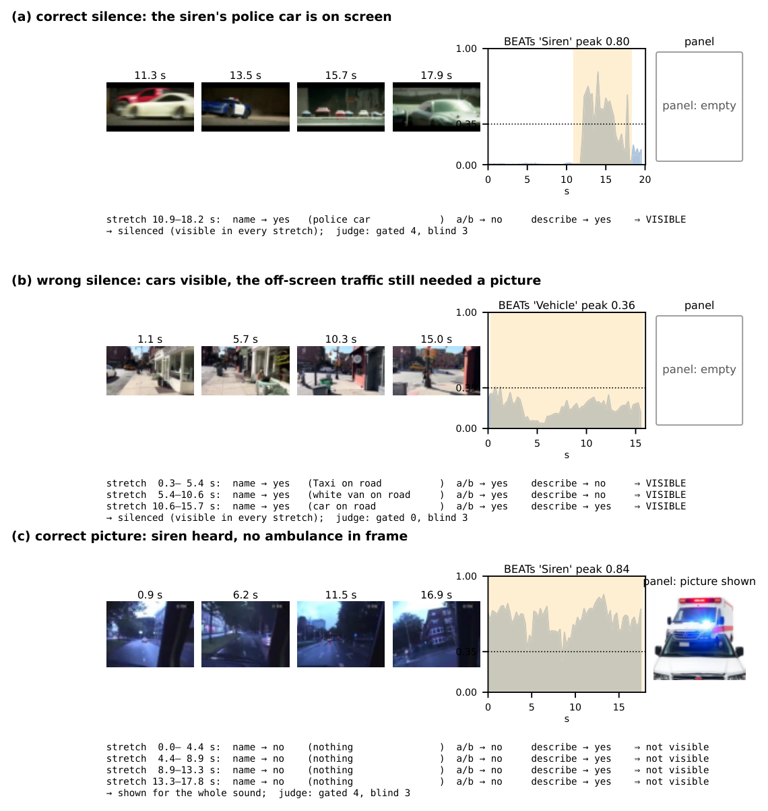
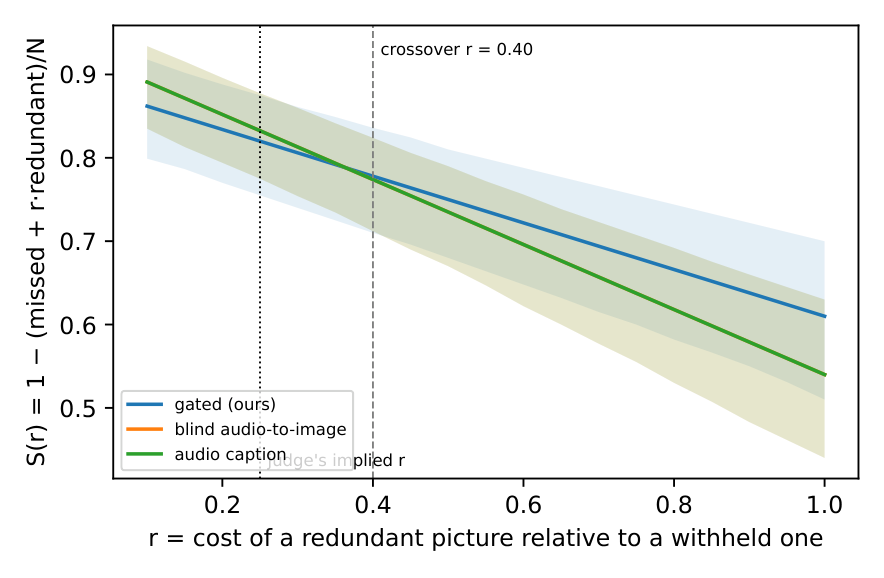

Visual Augmentation of Audio Semantics for Accessibility
Adam Gavriely · supervisor meeting · first update. Say the tie first; do not let him discover it.
One-sentence claim. A training-free chain of existing models can decide "heard but not seen" well enough to remove 30% of unnecessary pictures, but with today's sound detectors it does not beat "draw everything", and the reason is measured.

Demos
Play the clean version; open the debug one only if he asks "why". Space plays/pauses the last clicked player. Scores are the judge's 0–4 under the human-corrected reference.
A · Police car on screen — correct silence
ours 4 · blind 3 · caption 3Notice: the siren is loud, the car is on screen, and the panel stays empty. The absence is the feature; the blind baseline loses a point here.
Trap worth saying: under the proposal's original reference this correct silence scored 0 — the reference was written by the detector, which heard the siren. That is why the reference was replaced.
B · New York street — wrong silence
ours 0 · blind 3 · caption 2Notice: cars are visible, the label says off-screen traffic is what matters. The gate saw cars and stayed silent → 0. Honest failure; also a debatable label. Debug view shows 0.36 Vehicle — visible: the detector fired, the gate declined.
C · Ambulance behind the camera — correct picture
ours 4 · blind 3 · caption 2Notice: no ambulance in frame; the siren gets a picture from the first second, for the whole sound. The second picture (a horn) is the Vehicle sound — the road was out of view in one stretch, so the rule keeps it. That is a redundant picture; the cost table counts it.
Likely questions at the demos (honest one-liners)
- Why is the picture a cartoon? FLUX draws a 2–5-word phrase on white; a generic picture avoids inventing details the sound cannot support. Stock photos scored +0.17 higher but 55% had restrictive licences.
- Why the horn on the ambulance clip? The Vehicle detection was out of view in one of four stretches; "silence only if visible everywhere" keeps it. Counted as cost.
- Why silent on the New York clip? The gate saw cars; the label says off-screen traffic. Four such clips on test.
- What does the detector miss? Sounds under loud speech or music: crowd at 0.22 under Speech 0.84, rain at 0.23 under Music 0.81; the bar is 0.35. Seven of the 11 withheld pictures.
- Why not lower the bar? Lowering it adds phantoms (a whale at a Christmas market at 0.36); the sweep on the development split found 0.35 already best.
- Why not a bigger vision model? Tried (32B): silences more visible sources (67% vs 35%) but wrongly silences 25% of off-screen sounds (was 3%).
- Why no user study? The proposal specified automatic evaluation; I state that helpfulness to deaf viewers is untested (decision 4).
Where each side loses, and why
| oracle | gated (ours) | blind | caption | |
|---|---|---|---|---|
| picture due (50) | 3.24 | 2.78 (−0.46) | 3.02 (−0.22) | 2.76 (−0.48) |
| no picture due (50) | 4.00 | 3.56 (−0.44) | 3.30 (−0.70) | 3.02 (−0.98) |
| all (100) | 3.62 | 3.17 (−0.45) | 3.16 (−0.46) | 2.89 (−0.73) |

Also available: the three clips frozen with votes and scores; cost-sensitivity (skip unless asked)


What I need from you
Click a chip to cycle open → decided → deferred. Answers save online as you type.
| # | Question | His answer | Status |
|---|
Departures from the proposal (one glance)
- Sound detector PANNs → BEATs; image generator SDXL → FLUX.1 (both measured improvements).
- 274 clips, not 300; a development/test split added so settings are chosen on clips the score never sees.
- The proposal's evaluation reference was written by the system's own models — circular — and was replaced by one corrected by my labels; both scores are reported.
- Everything else as proposed: no training, minimum hand-written rules, automatic scoring.
Numbers
| what | value |
|---|---|
| headline (100 test clips) | gated 3.17 · blind 3.16 · caption 2.89 · CI on the difference −0.15..+0.18 |
| perfect gate (oracle) | 3.62 · both systems ≈ −0.45 below it |
| picture due / not due | 2.78 vs 3.02 (−0.24 [−0.54,+0.04]) · 3.56 vs 3.30 (+0.26 [+0.12,+0.40]) |
| cost to the viewer | panel on 47% vs 60% of a clip · wasted 357 s vs 506 s on the 50 no-picture clips (−30%) |
| DCASE 2025 outside check | 66.7% ± 6 · off-screen kept 97% · on-screen silenced 35% |
| benchmark | 274 clips · 100 test (25 per scenario) · 174 dev · self-agreement 78%, κ 0.60 (intra-rater) |
| withheld pictures on test | 11 · 7 detector (under speech/music) · 4 label ambiguity · 0 timing |
| attempts | 6 detector + 1 visibility fix, all failed declared bars · 3 automatic references failed at the visibility question |
| documents | thesis 19 pp · executive summary 14 pp · LIMITATIONS.md · update 2 pp |
Parking lot and actions
Say: "Numbers freeze today at 18:00; submit the 18th. Anything I could not answer goes here."